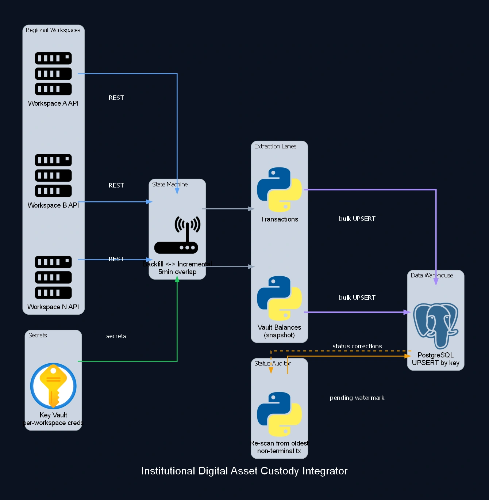

Institutional Digital Asset Custody Integrator
Institutional crypto asset custody, with each regional workspace isolated, its own credential loaded from a vault, and two parallel lanes (transactions and per-vault balance snapshots) under a single ingestion orchestrator. A state machine switches on its own between full backfill and incremental mode, with a 5-minute overlap at the handoff so no record is lost at the window's edge. A separate, lighter auditor re-scans only the transactions still in a non-terminal status, starting from the oldest pending record, and upserts whatever changed, with no need to re-scan the entire history to catch a transaction that took a while to settle.

Case Study
Problem
Each regional custody workspace had its own credential and its own pace, but a transaction in an intermediate status (pending, under approval) could change state hours or days later, with no way to know without reprocessing everything. Full backfill and incremental capture were competing for the same checkpoint logic.
Solution
A centralized orchestrator processes each workspace in isolation, with its own key loaded from a secrets vault. A state machine decides on its own whether it's still backfilling (checkpoint moves through the oldest processed record) or already incremental (checkpoint moves through the newest, with a 5-minute overlap at the handoff). Two lanes run per workspace, transactions and per-vault-account balance snapshots, both upserted by key. A separate, lighter auditor fetches only the earliest date among the still-open transactions and re-scans the API from there, never from the start.
Impact
A transaction that changes status after capture gets corrected without reprocessing the whole history. Each workspace keeps its own checkpoint and its own run history, so a failure in one never blocks the others. Balance snapshots and transactions always land in the same schema, ready for cross-auditing.
Need to isolate digital-asset custody by regional workspace? Let's design that architecture for your context.
Discuss your case